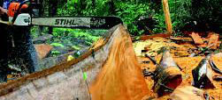

Deforestación de la micro cuenca el pailón en el Corregimiento de La Vega Municipio de San Bernardo.
La Micro cuenca el PAILÓN ubicada en el municipio de san Bernardo Nariño corregimiento de La Vega; es de gran importancia, ya que de esta se abastecen la comunidad, pero lastimosamente en la parte alta de la cuenca presenta un alto nivel de deforestación; ocasionando por la practica actividades antropicas como: la tala indiscriminada de árboles para sacar leña y otras plantas con fines comerciales, disminuyendo su caudal notablemente, la degradación de los suelos, destrucción de habitad, servicios ecosistémicos y en los últimos años grandes deslizamientos de tierra que han generado avalanchas; poniendo en riesgo a la comunidad.